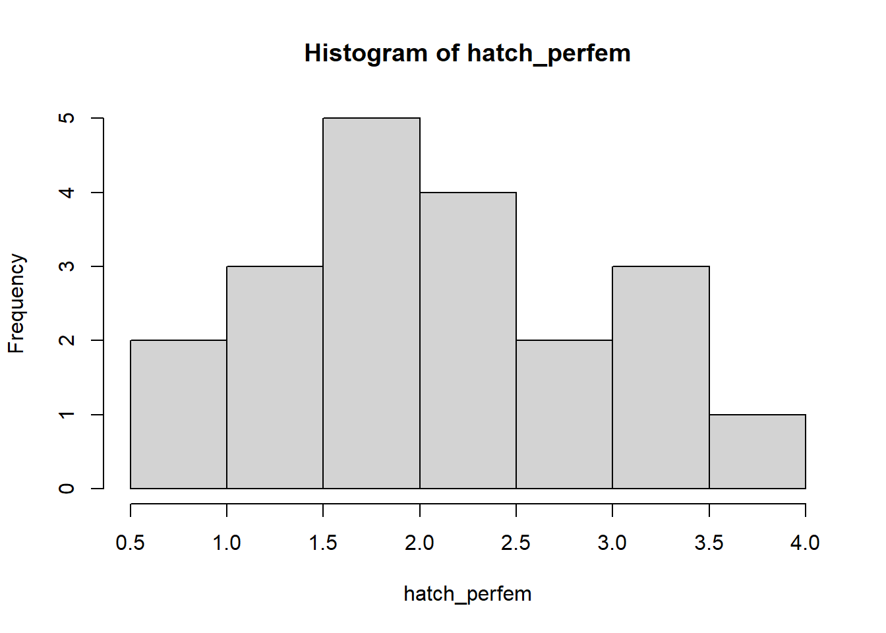

Stochasticity and Uncertainty
NRES 470/670
Feb 12, 2017

Uncertainty!
All ecological systems are full of uncertainty. We all know it intuitively. But what exactly do we mean by that? And how can we deal with it? How can we incorporate it into our models?
This is one of the most important modules in this course. But it is not in the Gotelli book, nor is it in highlighted in most ecology textbooks.
A taxonomy of uncertainty
There are two major reasons we can be uncertain. Either we lack sufficient knowledge or the system itself is variable and unpredictable. Let’s explore these two types of uncertainty.
You lack sufficient knowledge. This is also known variously as sampling uncertainty, parameter uncertainty, structural uncertainty, and more. If you collected more data you could in principle make a better model that more closely represents reality.
The system is inherently unpredictable. This is also known as randomness or stochasticity. No matter how much we study a coin, we will not be able to predict outcome of a coin flip any better than 50-50 (at least let’s just say that’s the case for now). Ecological systems have inherent variability. We can’t predict with certainty whether or not an individual will mate, or die. We can’t really even be certain whether next year or the year after that will be a good year or a bad year for offspring production or mortality in general!
How to deal with uncertainty
The key is to embrace uncertainty. As population ecologists, we have three major tools to help us manage and account for uncertainty in our study systems:
Uncertainty analysis
- First, what if we simply don’t have enough data to build a perfect model? This is an example of lacking sufficient knowledge. In this case, the tool we use is called uncertainty analysis. Basically, we try all plausible values (or just the minimum and maximum value) and see what happens to our study system (e.g., does the population go extinct? decline?). You should know – the term “sensitivity analysis” is often used for this concept, but InsightMaker uses this term in a different way (basically referring to multiple replicates of stochastic models) – so we will refer to this as “uncertainty analysis” to avoid confusion)
Stochastic models (two main types)
Second, we usually can’t predict whether an individual will live or die, breed or not breed (whether an individual will “get lucky” so to speak!)? We might know the per-capita probability of breeding, or the probability of dying, or the per-capita rate of offspring production, or the probability of a given offspring being female. But when it comes to projecting who lives and dies, who gives birth and who doesn’t, how many females are born, we just can’t know for sure. This is an example of a system being inherently unpredictable. In population ecology this is called demographic stochasticity. In this case, the tool we use is computer-simulated “coin flipping”.
Third, we usually can’t predict whether next year or the year after will be a good one or a bad one for a population- that is, whether the per-capita vital rates (e.g., \(b\), or \(d\) or \(r\)) will be more or less optimal year-to-year (whether a population will “get lucky”, so to speak). This is another example of a system being inherently unpredictable. In population ecology this is called environmental stochasticity. In this case, the tool we use is randomly varying vital-rates.

Random number generation
To incorporate uncertainty and randomness into our models, we need to include stochastic components so that each model run (replicate) – or each year of each model run – is different from one another. That is, we need to include at least one random number generator in our models! A random number generator is like a box of (potentially infinite) possible numbers – a lottery ball machine for example! Each time we want a new number we reach in and pull one out, record the number, put it back in and shake it up again.

Every random-number generator has a distribution. This is a way of defining what exactly is in the box. For example, the box might have 10 “ones”, 5 “twos”, and 2 “threes”. In this case the distribution looks like this (probability of each possibility):

A probability distribution can be pretty much anything you want it to be. However, there are several key distributions that come up again and again in nature, and we should know them!
Probability distributions
Discrete vs. continuous
In discrete distributions, each outcome has a specific probability (like the probability of flipping a coin 10 times and getting 4 heads). For example, let’s consider a binomial distribution

Another discrete distribution we will use in this class is the Poisson distribution:

In continuous distributions, there is an infinite set of possibilities in our random-number box.
Let’s consider the uniform distribution:
lower = 0
upper = 10
curve(dunif(x,lower,upper),0,10,ylab="Probability (density)",xlab="Possibilities",main="Uniform distribution (continuous)",ylim=c(0,1)) # probability density
This isn’t a very intersting looking distribution. All possible numbers from 0 to 10 are equally probable.
Another continuous distribution you should know is called the Normal distribution. This distribution has a lower bound of \(-\infty\) and an upper bound of \(\infty\).
Q What population parameter might this distribution be useful for modeling?
mean = 7.1
stdev = 1.9
curve(dnorm(x,mean,stdev),0,15,ylab="Probability (density)",xlab="Possibilities",main="Normal distribution (continuous)") # probability density
Another continuous distribution you should know is called the Lognormal distribution. This distribution has a lower bound of zero and an upper bound of \(\infty\).
Q What population parameter might this distribution be useful for modeling?
meanlog = 1.4
stdevlog = 0.6
curve(dlnorm(x,meanlog,stdevlog),0,15,ylab="Probability (density)",xlab="Possibilities",main="Lognormal distribution (continuous)") # probability density
Another continuous distribution you should know is called the Beta distribution. This distribution has a lower bound of zero and an upper bound of 1.
Q What population parameter might this distribution be useful for modeling?
shape1 = 10
shape2 = 4
curve(dbeta(x,shape1,shape2),0,1,ylab="Probability (density)",xlab="Possibilities",main="Beta distribution (continuous)") # probability density
Explore distributions in R
Let’s play around with distributions a little using R- you can access a web-based version of R called R-fiddle.
Note that all these distributions are also available to you in InsightMaker.
Here’s some R syntax for you!
Note that R random number generators start with the letter “r” – for “random”.
The first argument represents how many random numbers you want R to draw from the specified distribution.
The following arguments represent the parameters of the random distribution you wish to draw from.
### Binomial random number generator
rbinom(1,size=10,prob=0.5) # note: "size" is the number of coin flips, and "prob" is the probability of coming up heads
### Poisson random number generator
rpois(1,lambda=4.1) # note: "lambda" represents the poisson mean (and variance!)
### Uniform random number generator
runif(1,min=1,max=3.5) # "min" and "max" are pretty obvious!
### Normal random number generator
rnorm(1,mean=3,sd=4.1) # normal distribution is defined by "mean" and "sd" (standard deviation).
### lognormal random number generator (like normal distribution, but can not go below zero)
rlnorm(1,meanlog=0.5,sdlog=0.2) # lognormal distribution is defined by "meanlog", the mean of the log-transformed random variable and "sd" (standard deviation of the log-transformed random variable).
### beta random number generator (bounded between 0 and 1- just like survival rate!)
rbeta(1,shape1=10,shape2=3) # beta distribution is defined by "shape1" and "shape2", which together define the mean and spread within the range from 0 to 1.Finally, you can make up your own distribution!
distribution <- c(5,3,5,4,3,6,4,5,5,1,6,5,4,3,6,6,4,2,8,4,4,5,2)
hist(distribution,freq = F, ylab="Probability",xlab="Possibilities") # visualize distribution
sample(distribution,1) # take one random sample from this distribution!## [1] 4In-Class Exercise: Stochasticity and Uncertainty
These concepts (like everything in this class) are best understood by worked examples.
Let’s start with a basic exponentially growing population that looks something like this:

Parameter Uncertainty
Set Birth rate equal to 0.4 and Death rate equal to 0.3. Set initial abundance at 10. Under the “Settings” menu set the model to run for 10 years. Make sure your Population stock can not go negative (this is a setting in the configurations panel). Hit “Simulate”- you should see exponential growth!
Parameter uncertainty: What if we have imperfect knowledge about birth rate? The birth rate could be anything from 0.2 to 0.5. Run the model with the lowest and the highest possible birth rate.
Now use the “Compare Results” tool (under the “Tools” menu in the upper right corner…) to visualize the range of possible population growth trajectories that would be possible given our uncertainty about birth rate.
Q What is the range of possible final abundances after 10 years?
Q Should we study this system more if we want to know whether the population is growing or declining??
Demographic Stochasticity
Set Birth rate back to 0.4. Hit “Simulate”- make sure you still see exponential growth!
We will use a Binomial distribution to represent the number of mortalities. That is, we flip a coin the same number of times as there are individuals in the population. If the coin comes up heads, then the individual dies. In this case we are using a biased coin- it only comes up heads 30% of the time! The Binomial distribution essentially represents the number of times heads came up. To do this in InsightMaker, use the following formula for the Deaths flow:
RandBinomial([Population], [Death rate])In plain english: the number of deaths is equal to the number of “coin flips” that come out heads if the probability of getting heads is equal to [Death rate] and the number of flips is equal to [Abundance].
For the total births, \(B\) we will use the Poisson distribution. The Poisson distribution is often use to represent births, because there could feasibly be more births than there are individuals currently in the population (e.g., if all individuals have two offspring!). This would not be possible with a binomial distribution! That is, the maximum number of “heads” (you can always think of binomial distributions as coin-flipping!) is the total number of individuals.
To do this in InsightMaker, use the following formula for the Births flow:
RandPoisson([Population]*[Birth rate])In plain english: the number of births is a random draw from a Poisson random number generator with mean equal to the expected number of births ([Population]*[Birth rate]).
- Run the simulation. What does it look like?
Correction, 2/28/2017: I identified a bug with the Poisson distribution in InsightMaker- it doesn’t work when the expected number of offspring exceeds about 750! So until they fix the bug, you would need to use an IF-THEN-ELSE statement to use the Poisson only where their algorithm actually works!
Correction, 3/1/2017: The bug has been fixed!
Use the “Sensitivity Testing” tool (in the “Tools” menu, upper right corner) to run the model 50 times. Choose [Population] as the “Monitored Primitive”.
Change the initial abundance to 500 and re-run the “Sensitivity Testing” tool.
Q Is the effect of demographic stochasticity bigger at low or high abundances?
Environmental Stochasticity
- Set Births back to what it was before ([Population]x[Birth rate]), and do the same for Deaths.
- We will use a Normal distribution to represent how the birth rate changes each year. This could represent climatic variablity – “good years” and “bad years”. The Normal distribution is commonly used for this type of variability- it is characterized by an average value (mean) and a variability measure (standard deviation). To do this in InsightMaker, use the following formula for the Birth Rate variable:
RandNormal(0.4, 0.4)Similarly, use the following formula for the Death Rate variable:
RandNormal(0.3, 0.3)Use the “Sensitivity Testing” tool (in the “Tools” menu, upper right corner) to run the model 50 times. Choose [Population] as the “Monitored Primitive”.
Change the initial abundance to 500 and re-run the “Sensitivity Testing” tool.
Q Is the effect of environmental stochasticity bigger at low or high abundances?
- Note that the normal distribution CAN go below zero or above 1, which is not always biologically realistic! As we saw above, you could use a different distribution! OR you could just truncate the normal distribution to behave more realistically. That is, if the random number you draw comes out below zero, just make it zero!
For birth rate, this can be done like this:
Max(0,RandNormal(0.4, 0.4))You could also use an IF-THEN-ELSE statement to do this…
Q Can you modify survival rate to constrain the random number between 0 and 1?
Re-run the model with the modified/constrained random vital rates.
Q (harder question!) Under what circumstances can you envision small populations being more vulnerable to environmental stochasticity than large populations?